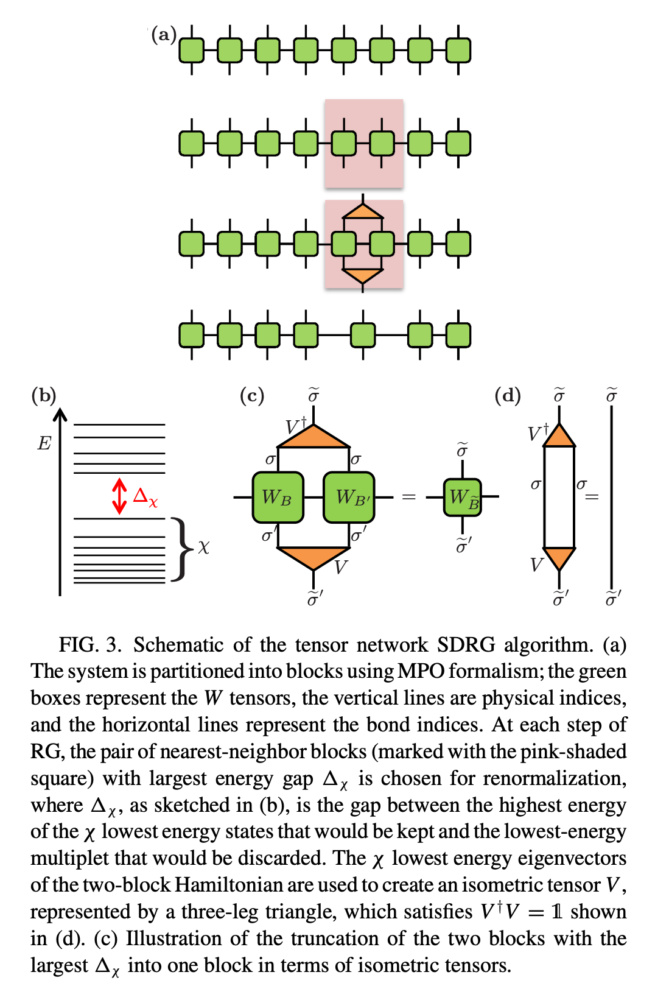
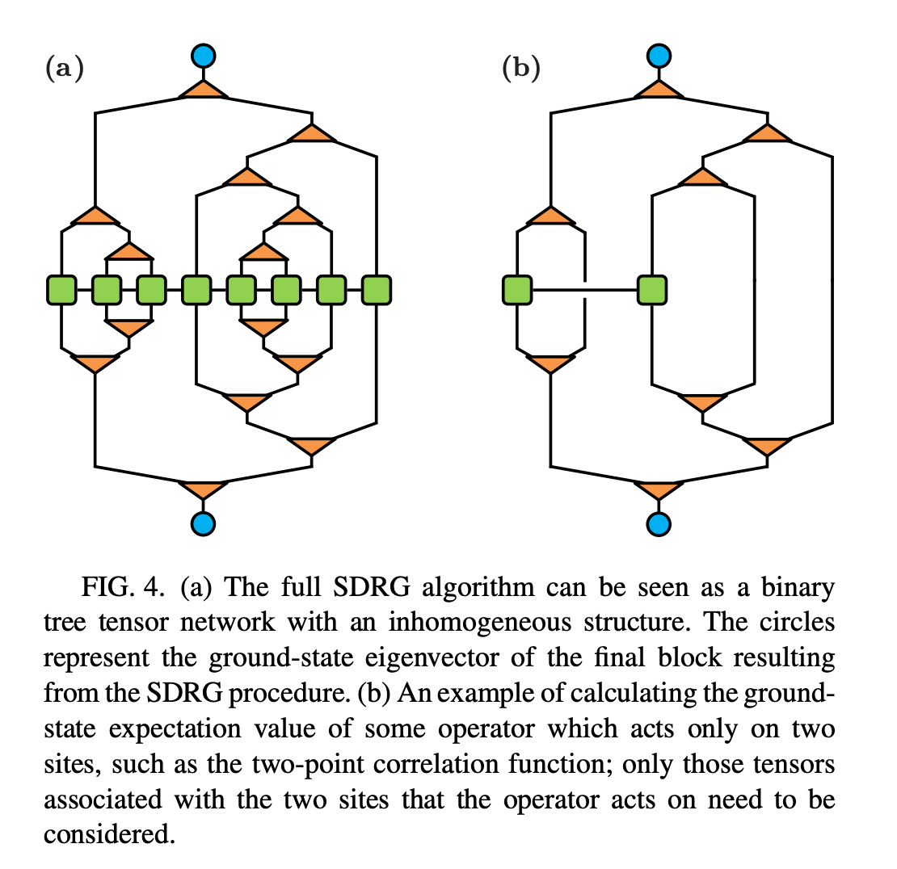

1. Algorithm 🚀¶
1.1. Preparation¶
Decompose Hamiltonian (of an 1D system) into MPO form.
Calculate the 2-site Hamiltonian for each nearest-neighbor i and i+1.
👉 This can be done in the following way. Suppose we have the following MPO on site i,
W_i = \begin{bmatrix} I & S^+_i & S^z_i\\ 0 & 0 & S^-_i \\ 0 & 0 & I \end{bmatrix}
By considering the product of the left vector W^{[L]} and the right vector W^{[R]} on site i and i+1, respectively, we have
W^{[L]}_i W^{[R]}_{i+1} \\ = \begin{bmatrix} I & S^+_i & S^z_i \end{bmatrix} \begin{bmatrix} S^z_{i+1}\\ S^-_{i+1} \\ I \end{bmatrix},
where the left vector is taken from the 1st row of the MPO, and the right vector is taken from the last column of the MPO. The vector product immediately yields the 2-site Hamiltonian.
Note: The example here is the Ising model with transverse field.
Compute the energy spectrum (eigenvalues) for every 2-site Hamiltonian.
Considering the bond dimension \chi to be the number of eigenvectors that will be preserved later. We define the energy gap \Delta_{\chi} to be
\Delta_{\chi} = \begin{cases} E_N - E_{N-1} \,\,\,\,\,when \,\,\chi \geq N - 1,\\ E_{\chi+1} - E_{\chi} \,\,\,\,\,when \,\,\chi < N - 1, \end{cases}
where N is the total number of eigenvectors.
1.2. Main part: growing the tree¶
 
Merge the 2-site block with largest energy gap. This can be performed by constructing the isometric tensor V (the triangular tensor in the figure) to be min(\chi, N) eigenvectors of the 2-site Hamiltonian. By contracting V^{\dagger} and V with 2 MPO tensors, one gets the updated MPO.
Compute the energy spectrum and the energy gap accordingly for affected block with its neighbors.
Repeat this procedure until there is only one MPO tensor remained.
Note: The isometric tensor at each step should be saved for later usage.
2. Data Structure 🚀¶
The problem considered here essentially forms a random binary tree. Though the construction of this tree is bottom-up, the data structure takes the same as in the standard top-down approach. Here we take Python for implementation
from dataclasses import dataclass
from typing import Any
@dataclass
class TreeNode:
id: int
value: Any
left: 'TreeNode' = None
right: 'TreeNode' = None
In class TreeNode, for each attribute we mean
id: The identity of each tree node
value: Data you want to save. Here it will be the isometric tensor V.
left: The child tree node on the left.
right: The child tree node on the right.
3. Measurements 🚀¶
We consider 3 physical measurements, energy spectrum near the ground state, correlation function and entanglement entropy. For latter two, one needs to consider the problem of lowest common ancestor (LCA) in graph theory and computer science.
We may compare the tSDRG result with exact diagonalization (ED)
[2]:
from tnpy.model import RandomHeisenberg
from tnpy.exact_diagonalization import ExactDiagonalization as ED
model = RandomHeisenberg(N=6, h=3.0)
model.seed = 2021
ed = ED(model.mpo)
print(ed.evals)
[-5.725274 -5.72107734 -4.74615997 -4.71268557 -4.06178764 -3.51217086
-3.25686868 -3.1702727 -3.08738826 -2.96569967 -2.96208476 -2.36976171
-2.2468987 -1.96518603 -1.93061032 -1.66092774 -1.63521806 -1.53696184
-1.53608151 -1.50235556 -1.3824775 -1.30353663 -1.28495105 -0.74151444
-0.48708556 -0.46889621 -0.38280498 -0.32933783 0.02287853 0.02405187
0.11860807 0.14026275 0.25916564 0.26466405 0.29724328 0.41903877
0.52586047 0.57210892 0.73767002 0.99008145 0.99912061 1.28296561
1.39148235 1.50087939 1.58252137 1.62971816 1.79899183 1.80060276
1.82251982 2.32711 2.35072418 2.42976868 2.51529568 2.62638576
2.77518678 2.78965217 3.0927528 3.37982529 3.39238364 3.40923678
3.59608887 4.2094474 4.42301798 5.18876342]
whereas for tSDRG, and with truncated bond dimensions \chi < 2**N
[3]:
from tnpy.tsdrg import TSDRG
tsdrg = TSDRG(model.mpo, chi=32)
tsdrg.run()
2021-10-27 16:56:05 [tsdrg.py] INFO: step 1, merging TreeNode(4) and TreeNode(5) to TreeNode(7)
2021-10-27 16:56:05 [tsdrg.py] INFO: step 2, merging TreeNode(2) and TreeNode(3) to TreeNode(8)
2021-10-27 16:56:05 [tsdrg.py] INFO: step 3, merging TreeNode(8) and TreeNode(7) to TreeNode(9)
2021-10-27 16:56:05 [tsdrg.py] INFO: step 4, merging TreeNode(1) and TreeNode(9) to TreeNode(10)
2021-10-27 16:56:05 [tsdrg.py] INFO: step 5, merging TreeNode(0) and TreeNode(10) to TreeNode(11)
2021-10-27 16:56:05 [tsdrg.py] INFO: Reach head node of the tree
2021-10-27 16:56:05 [tsdrg.py] INFO: Obtain ground state energies [-5.725274 -5.72107734 -4.74615997 -4.71268557 -4.06178764 -3.51217086
-3.25686868 -3.1702727 -3.08738826 -2.96569967 -2.96208476 -2.36976171
-2.2468987 -1.96518603 -1.93061032 -1.66092774 -1.63521806 -1.53696184
-1.53608151 -1.50235556 -1.3824775 -1.30353663 -1.28495105 -0.74151444
-0.48708556 -0.46889621 -0.38280498 -0.32933783 0.02287853 0.02405187
0.11860807 0.14026275]
but if we take the maximum bond dimensions \chi = 2 ** N, which is 64 here, then the result will then be exact.
[4]:
tsdrg = TSDRG(model.mpo, chi=64)
tsdrg.run()
2021-10-27 16:56:14 [tsdrg.py] INFO: step 1, merging TreeNode(4) and TreeNode(5) to TreeNode(7)
2021-10-27 16:56:14 [tsdrg.py] INFO: step 2, merging TreeNode(2) and TreeNode(3) to TreeNode(8)
2021-10-27 16:56:14 [tsdrg.py] INFO: step 3, merging TreeNode(8) and TreeNode(7) to TreeNode(9)
2021-10-27 16:56:14 [tsdrg.py] INFO: step 4, merging TreeNode(1) and TreeNode(9) to TreeNode(10)
2021-10-27 16:56:14 [tsdrg.py] INFO: step 5, merging TreeNode(0) and TreeNode(10) to TreeNode(11)
2021-10-27 16:56:14 [tsdrg.py] INFO: Reach head node of the tree
2021-10-27 16:56:14 [tsdrg.py] INFO: Obtain ground state energies [-5.725274 -5.72107734 -4.74615997 -4.71268557 -4.06178764 -3.51217086
-3.25686868 -3.1702727 -3.08738826 -2.96569967 -2.96208476 -2.36976171
-2.2468987 -1.96518603 -1.93061032 -1.66092774 -1.63521806 -1.53696184
-1.53608151 -1.50235556 -1.3824775 -1.30353663 -1.28495105 -0.74151444
-0.48708556 -0.46889621 -0.38280498 -0.32933783 0.02287853 0.02405187
0.11860807 0.14026275 0.25916564 0.26466405 0.29724328 0.41903877
0.52586047 0.57210892 0.73767002 0.99008145 0.99912061 1.28296561
1.39148235 1.50087939 1.58252137 1.62971816 1.79899183 1.80060276
1.82251982 2.32711 2.35072418 2.42976868 2.51529568 2.62638576
2.77518678 2.78965217 3.0927528 3.37982529 3.39238364 3.40923678
3.59608887 4.2094474 4.42301798 5.18876342]